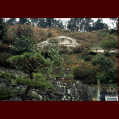

コンクリ彫刻師の家/佐賀県武雄市 
武雄の市街＆温泉街から少し離れたところに沖縄の亀甲墓のようなモノを発見した。
そこは傾斜地になっており、斜面の下の方は玉石で土止めがされており、小さな作業小屋のような家がたっている。そこから急な階段が延び、コンクリート製の亀甲墓のようなモノに至っているのだ。
小屋の前で掃除をしていた主人に話を伺ってみる。ここの主人、コンクリートの彫刻という一風変った仕事をしており、日本三大稲荷ともいわれる祐徳稲荷神社の彫刻なども手がけたとの事。現代の鏝絵師といったところか。コンクリ仕事に関しては玄人なのだ。
問題の亀甲墓のようなモノを近くで見せてもらうことになり、階段を登り始めると、その手摺が凝り凝りなのに気付く。オジサンに聞くと待ってましたとばかりにウンチクをたれはじめる。
それによるとここの手摺は皆コンクリート製の擬木で出来ている。ちょっと見た目には本物の木かと思ってしまう位、良くできている。というのも木肌の感じを出すためにウロ（腐って穴があいた部分）や節まで細かく「細工」しているからとの事。また、柱の上に乗る擬宝珠などは大理石そっくり。これも大理石の持つ細かい穴を「秘技」により再現しているからだそうである。藤棚の竹も勿論擬木。節の内壁まで丁寧につくられている。ハイパーリアリズムである。
で、階段を登りきる。亀甲墓のようなモノは観音様を奉る祠であった。これだけ緻密な仕事をする割にはここだけが何故か粗々しい。まだ未完成なのであろうか。
オジサンに聞くも、「うん、観音様を奉ろうかと思って・・・」といったきり口数が少ない。技術的なことに関してはあれほど饒舌だった人だが、きっとこの観音堂に関しては何か心の奥深くで思うところがあるのだろう。敢えて聞くまい。
替わってオジサンはこの斜面にある植木について説明を始めた。見れば植木の方も玄人好みである。訪れた時は丁度斑入りの山茶花が咲いており、万両が黄色い実（長崎までとりにいったとの事）をつけていた。ここは一年中様々な花が咲いているという。
ここはこのオジサンにとってのパラダイスなんだろうなあ、などと思いもう一度全景を眺める。でも、やっぱり佐賀に出現した亀甲墓という印象しか持ちえなかった。
1998.2.
珍寺大道場 HOME